SpotsPH
Travel Guide SpotsPH
The Essential Web Guide SpotsPH
SpotsPH is a simple guide for exploring the best places in the Philippines. It helps you find popular spots, hidden gems, and local favorites. Whether you want beaches, mountains, or city sights, SpotsPH shows you where to go.
DISTINATION
Browse top spots in Philippines
SIARGAO
Siargao Island, known as the “Surfing Capital of the Philippines,” is a tropical paradise with world-class waves, pristine beaches, rich mangrove forests, vibrant culture, and abundant adventure opportunities.
View More
ELNIDO
El Nido features fishing villages set beside limestone cliffs and blue lagoons. Daily life centers on the sea, boat tours, and fresh catch markets. The area values nature care and local guides.
View More
BORACAY
Boracay combines resort life with nightlife and beach sports. Vendors line the shore, and sunset sails draw crowds each evening. Tourism shapes most work in the area.
View More
BAGUIO
Baguio blends mountain living with busy markets and creative crafts. Cool weather supports vegetable farms and coffee shops across the city. You will see art stalls, street musicians, and food vendors along main roads.
View More
BOHOL
Bohol shows calm island life mixed with deep traditions and strong family ties. You will notice old churches, craft markets, and town fiestas across the province. Locals value community gatherings and fresh coastal meals. Cooking centers on seafood, peanuts, root crops, and native rice cakes.
View More
BATANES
Batanes reflects quiet village life shaped by wind, sea, and stone homes. Ivatan culture values discipline, farming, and fishing. Houses use thick walls to resist storms, and landscapes stretch wide with rolling hills.
View More
VIGAN
Vigan preserves colonial streets, brick houses, and horse drawn rides. Ilocano culture values thrift, history, and home cooking passed down through families. The city keeps strong pride in its heritage.
View More
CEBU
Cebu mixes city pace with island roots and religious festivals. Music, street parades, and coastal trade shape daily life. Locals celebrate history and food gatherings across neighborhoods.
View More
MINDORO
Mindoro supports farming communities and indigenous groups with deep forest and coastal links. Mangyan culture values weaving, farming cycles, and forest respect. Rivers and mountains shape daily routines.
View More
MACTAN
Mactan centers on fishing life and historic pride tied to Lapu Lapu. Resorts share space with coastal villages and seafood grills. The island keeps strong links to sea travel and trade.
View More
Philippine Food and Adventure Guide
Explore the Philippines Cities, Culture, Food, and Adventures
1. Siargao
Siargao thrives on surf culture and laid-back island life. Cafes, board shops, and fishing boats line village roads framed by coconut trees and golden sunsets. The menu features grilled squid, kinilaw (raw fish salad), coconut-based dishes, and tropical fruit bowls. Popular activities include surfing at Cloud 9, swimming in tidal rock pools at Magpupungko, island hopping to nearby islets, and paddling through mangrove forests. Siargao blends active water sports with moments of calm, attracting both thrill-seekers and nature lovers.
Best foods
- Coconut based curries
- Grilled squid
- Fish kinilaw
- Tropical fruit bowls
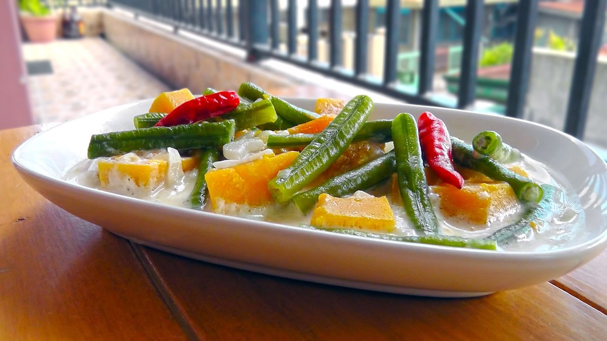
These dishes use fresh coconut milk mixed with spices and seafood or chicken. The flavor stays rich and slightly sweet.
Fishermen bring the catch early in the morning, so cooks prepare meals with fish, shrimp, or crab taken straight from the sea. Coconut milk softens strong spices and keeps the taste balanced.
Locals serve these curries with hot rice and grilled vegetables. Beach eateries place them on daily menus for lunch and dinner.

Fresh squid cooks over charcoal fire and receives sauce while grilling. Rice and vinegar dip usually come on the side.
Vendors marinate squid with garlic, soy sauce, citrus, and pepper. Smoke adds flavor while the meat stays tender.
Night markets and seaside stalls sell this dish after sunset. Many visitors share plates with drinks.
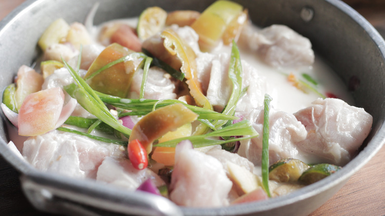
Kinilaw uses raw fish cured in calamansi or vinegar mixed with ginger and onions.
Chefs slice fish thin and prepare it close to serving time so texture stays firm. Chili and cucumber add crunch.
Locals eat kinilaw before grilled meals or during afternoon breaks near the beach.
These bowls combine mango, banana, pineapple, and berries layered over yogurt or coconut cream.
Staff finish bowls with granola, seeds, coconut flakes, and honey for crunch.
Surfers stop by after sunrise sessions to refuel with cool meals prepared fresh.
Best activities
- Surf at Cloud 9
- Swim in Magpupungko Rock Pools
- Island hopping
- Paddle through mangroves and lagoons
Instructors teach beginners in calmer zones and rent boards near the entrance. Skilled riders wait offshore for larger sets.
Food stalls and cafes operate nearby for post surf breaks. Many guests stay until sunset to watch colors shift across the sea.
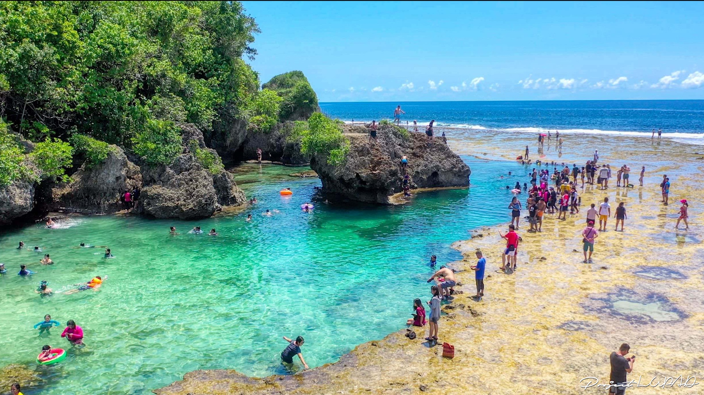
The rock pools appear during low tide when ocean water pulls back and reveals wide basins between stones.
Visitors plan trips using tide charts posted at resorts and shops. Clear water fills each pool for relaxed swimming.
Vendors sell cold drinks near the entrance while guests rest on flat rocks and take photos.
Island hopping tours stop at Naked Island, Daku Island, and Guyam Island in one day.
Boats cross shallow water while guides explain rules and help guests snorkel.
Seafood lunches appear on Daku Island before travelers relax under palms and return by afternoon.
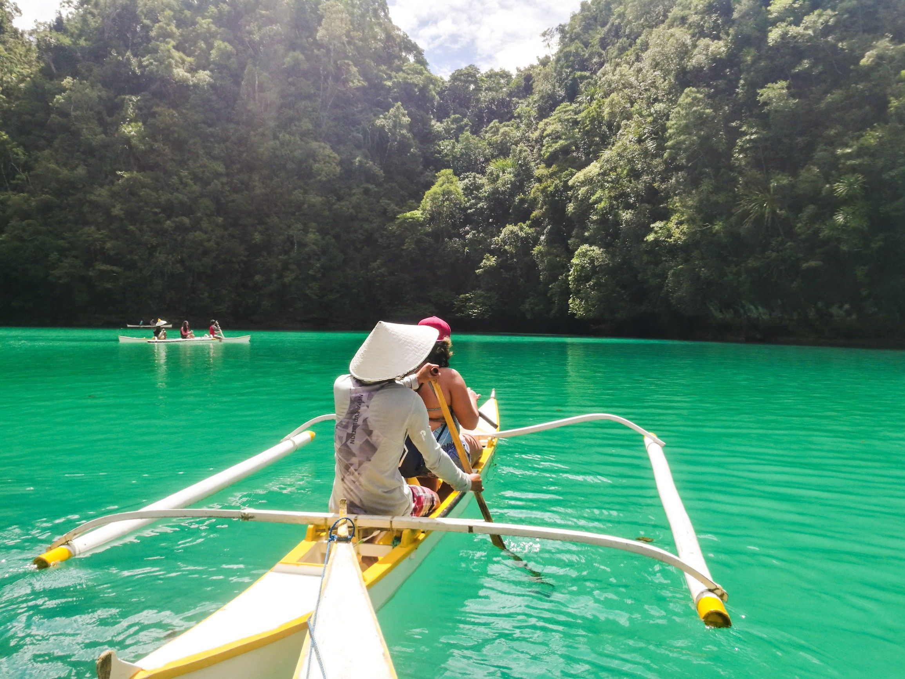
Paddling trips pass through narrow waterways lined with mangrove roots and tall trees.
Guides provide kayaks and life vests before short safety briefings.
Shade cools riders during midday while birds and fish appear near the surface.
2. Ilnido
El Nido features fishing villages set against dramatic limestone cliffs and crystal-clear blue lagoons. Daily life revolves around the sea, boat tours, and fresh markets. The community values environmental care and works closely with local guides. Signature meals include grilled lobster, coconut shrimp, fish soups, and fresh tropical fruit plates. Visitors kayak through lagoons, join island hopping tours, snorkel coral reefs, and climb cliff viewpoints for breathtaking panoramas. El Nido offers stunning natural scenery paired with warm hospitality and sustainable tourism.
Best foods
- Grilled lobster
- Fish sinigang
- Coconut shrimp
- Tropical fruit plates
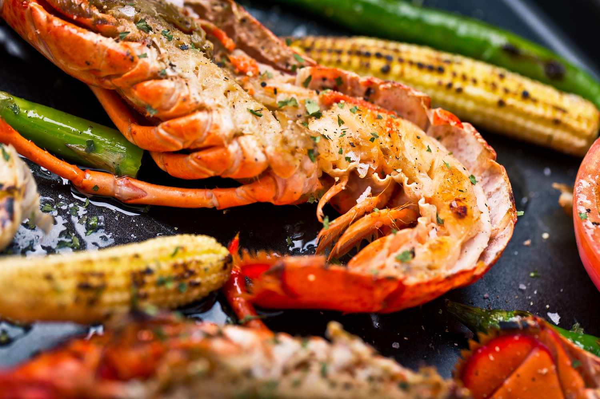
These dishes use fresh lobster grilled over charcoal, enhancing its natural sweetness and smoky aroma. Locals often serve it with simple dipping sauces that complement the rich meat.
This dish is popular in seaside restaurants and often enjoyed during celebrations and gatherings with family and friends.
Pairing grilled lobster with tropical fruits and fresh coconut water completes the authentic island dining experience.
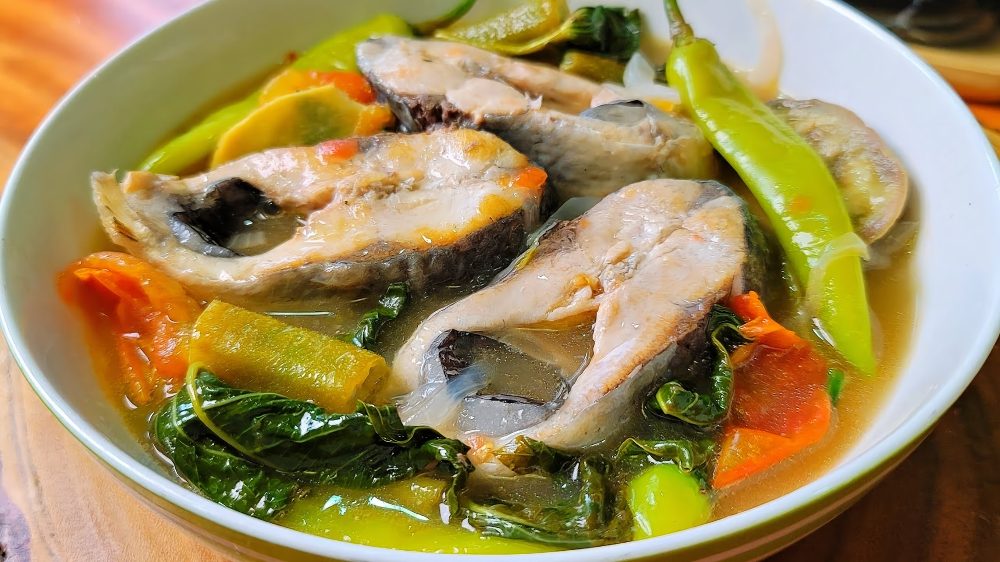
Sinigang is a sour tamarind-based soup that highlights the freshness of local fish like bangus or milkfish. It’s hearty and perfect for any meal.
The broth combines vegetables like tomatoes, radish, and kangkong, balancing tartness with mild sweetness from the fish.
It’s a staple in El Nido homes and a comforting dish for visitors seeking authentic Filipino flavors.
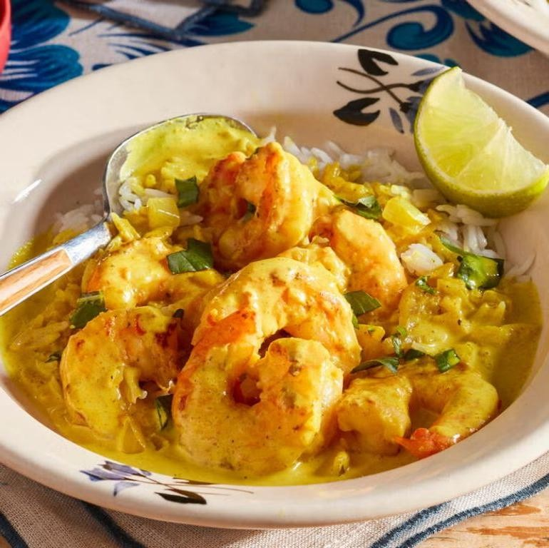
Shrimp cooked in creamy coconut milk mixed with local spices and herbs creates a rich, fragrant dish.
The coconut base softens the spices, making it slightly sweet and aromatic while highlighting fresh seafood flavors.
Often served with steamed rice, this dish reflects the tropical flavors of El Nido’s coastal cuisine.
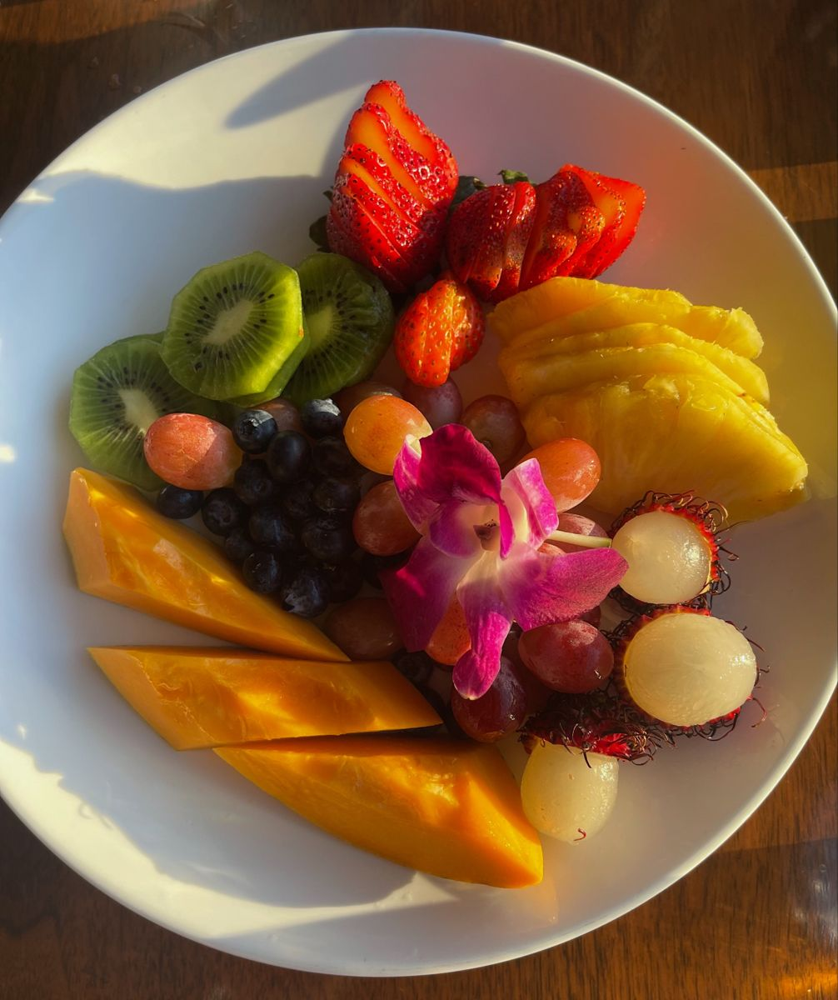
Plates piled high with mango, pineapple, bananas, and other seasonal fruits offer a refreshing and colorful end to meals.
These fruits are often sourced from local farms and markets, ensuring freshness and vibrant flavors.
Many cafes present these as healthy breakfast options or light snacks, perfect after a day in the sun.
Best activities
- Kayak in lagoons
- Join island tours
- Snorkel coral reefs
- Climb cliff viewpoints
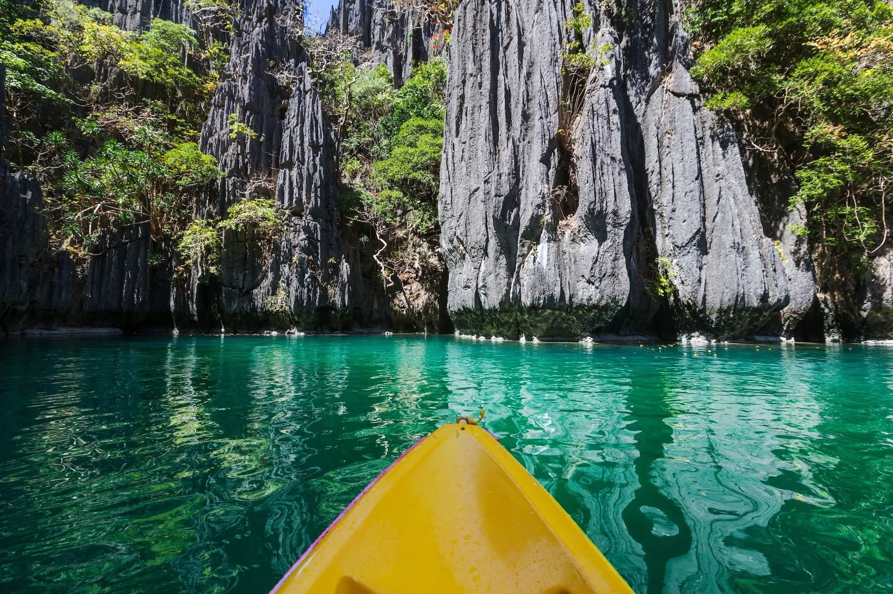
Kayaking through El Nido’s lagoons offers peaceful views of limestone cliffs and crystal-clear waters.
This gentle activity lets you explore hidden caves and calm waters at your own pace.
Guides often point out local flora and fauna, making the experience both relaxing and educational.
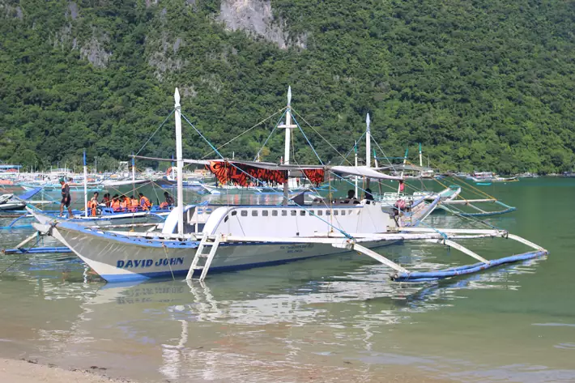
Island hopping tours take visitors to stunning beaches, secret lagoons, and snorkeling spots around Bacuit Bay.
Boats stop at multiple islands where you can swim, snorkel, or relax on white sand shores.
These tours often include local guides sharing stories about the islands’ history and natural wonders.
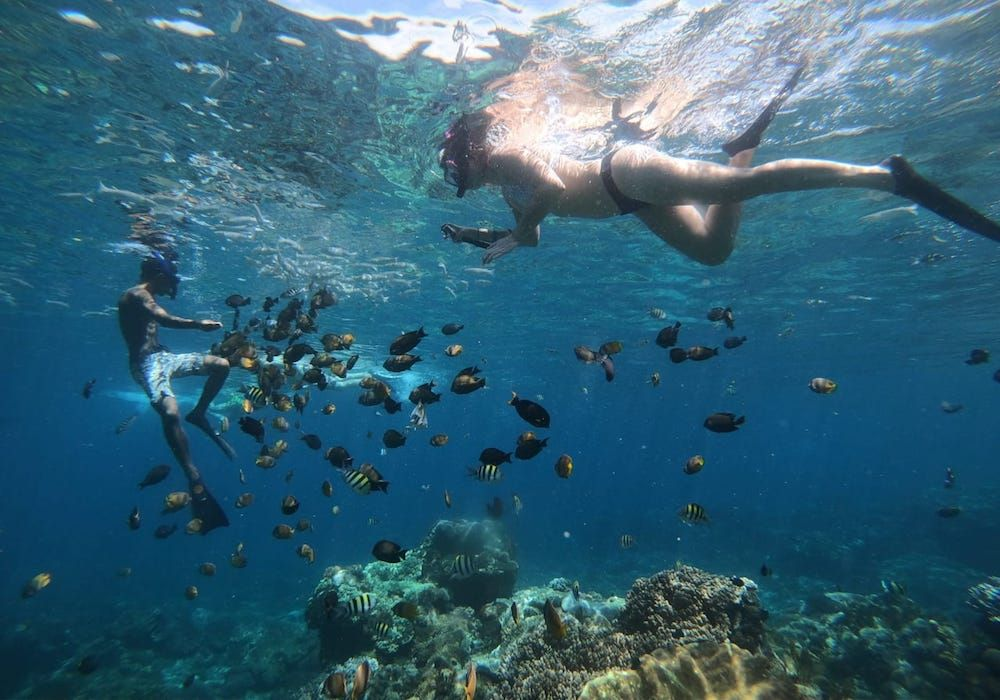
Snorkeling reveals vibrant coral gardens teeming with tropical fish and marine life.
Clear waters provide excellent visibility, making it easy for beginners and experts alike to enjoy underwater sights.
Many tour operators provide equipment and safety briefings for a safe and fun experience.
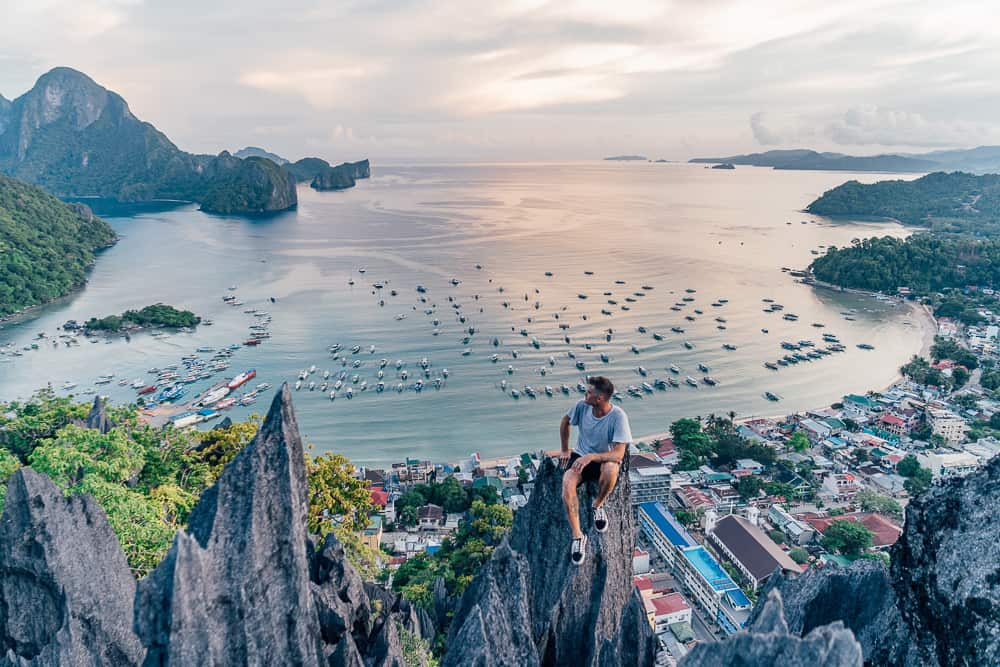
Taraw Cliff offers challenging hikes rewarded by panoramic views of El Nido and Bacuit Bay.
The climb involves steep paths and ladders but leads to unforgettable sights perfect for photography.
Many visitors time their climb for sunrise or sunset to capture stunning light over the islands.
3. Boracay
Boracay combines lively resort life with vibrant nightlife and water sports. Vendors fill the shoreline, and sunset sails gather crowds every evening. Tourism drives much of the local economy. Popular treats include mango shakes, chori burgers, seafood platters, and grilled prawns. Visitors swim at White Beach, go parasailing, enjoy sunset sailing, and try paddle boarding. Boracay’s energy and beauty create a festive, sun-soaked atmosphere that appeals to all kinds of travelers.
Best foods
- Seafood platters
- Chori burger
- Mango shakes
- Grilled prawns
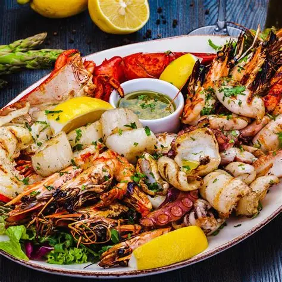
Seafood platters in Boracay feature fresh catches like fish, crabs, squid, and shellfish, usually grilled or steamed to perfection. The natural flavors are highlighted with minimal seasoning to keep the taste fresh and authentic.
These platters are popular in beachside restaurants, often served with dipping sauces made from local spices, vinegar, and garlic. Sharing seafood platters is a social experience enjoyed by locals and tourists alike during lively gatherings.
Fresh seafood pairs perfectly with cold drinks and tropical fruits, making it a must-try for anyone visiting Boracay who wants a true taste of island cuisine.
The chori burger is a local favorite made with juicy chorizo sausage patties grilled and served on soft buns. It often includes toppings like tomatoes, onions, and a special sauce that blends sweet and spicy flavors.
This street food delight is popular among both locals and tourists for its bold taste and convenient size, perfect for a quick snack while exploring the island.
Many vendors prepare the burgers fresh at roadside stalls and beach markets, giving visitors a chance to enjoy authentic Boracay flavors with every bite.
Mango shakes in Boracay are creamy and refreshing, made from ripe local mangoes blended with ice, milk, and a touch of sugar. The sweet, smooth texture makes it a perfect treat on hot days.
These shakes are sold at cafes, food stalls, and beach bars, often served with a straw and sometimes topped with fresh mango chunks or whipped cream for extra indulgence.
Visitors enjoy mango shakes as a cool, energizing drink during beach days or as a delicious dessert after meals, embracing the tropical vibe of the island.
.webp)
Grilled prawns are a popular dish on Boracay, showcasing fresh seafood lightly seasoned and cooked over charcoal. The smoky aroma enhances the natural sweetness and firm texture of the prawns.
Served with garlic butter or spicy sauces, grilled prawns are often enjoyed as a main dish or as part of seafood feasts shared among family and friends by the shore.
This dish is a highlight at many beachfront restaurants, combining simplicity and flavor to reflect Boracay's coastal culinary traditions.
Best activities
- Swim at White Beach
- Parasail over the shore
- Watch sunset sailing
- Join paddle boarding
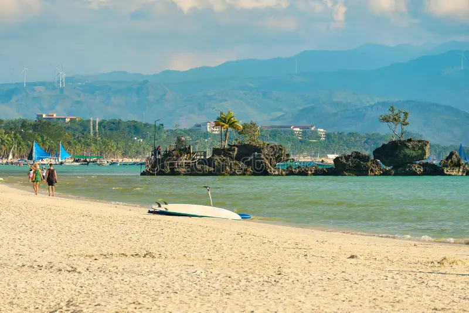
White Beach is Boracay's most famous shoreline, offering soft white sand and clear, warm waters perfect for swimming. The gentle waves make it safe for swimmers of all ages.
Visitors enjoy lounging on the beach or taking refreshing dips throughout the day, while nearby vendors offer snacks and refreshments to keep energy high.
Sunset swims here create magical moments as the sky changes colors, drawing crowds to enjoy the natural beauty and vibrant atmosphere.
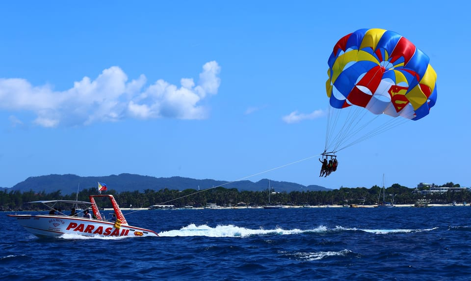
Parasailing offers thrilling aerial views of Boracay's coastline, with colorful parachutes lifting riders high above the water. This adventure combines excitement with breathtaking scenery.
Operators ensure safety with trained instructors guiding the experience, allowing beginners and experienced thrill-seekers alike to enjoy the ride.
From above, you see the island's vibrant beaches, turquoise waters, and bustling resorts, making it a memorable highlight of any Boracay visit.
Sunset sailing on a paraw, a traditional Filipino sailboat, offers a peaceful way to experience Boracay's natural beauty. The boat glides over calm seas as the sun dips below the horizon.
This activity is perfect for relaxation, romance, or photography, as the vibrant colors of the sunset reflect on the water and sky.
Many tours include light snacks and drinks, making it a popular choice for couples and groups wanting a serene end to the day.
Paddle boarding lets visitors explore Boracay's calm coastal waters at their own pace. This activity offers both exercise and sightseeing opportunities.
Many rental shops provide boards and safety gear, with some offering guided tours to hidden spots along the shore.
Whether you're a beginner or experienced paddler, paddle boarding is a fun way to enjoy the island's natural charm and clear waters.
4. Baguio
Baguio blends mountain living with busy markets and creative crafts. Cool weather supports vegetable farms and coffee shops across the city. You will see art stalls, street musicians, and food vendors along main roads. Popular eats include strawberry taho, ube jam, pinikpikan chicken, and fresh bread. City plans include Burnham Park walks, Session Road shopping, Botanical Garden visits, and Mines View lookout stops.
Best foods
- Strawberry taho
- Ube jam
- Pinikpikan chicken
- Fresh bread from local bakeries
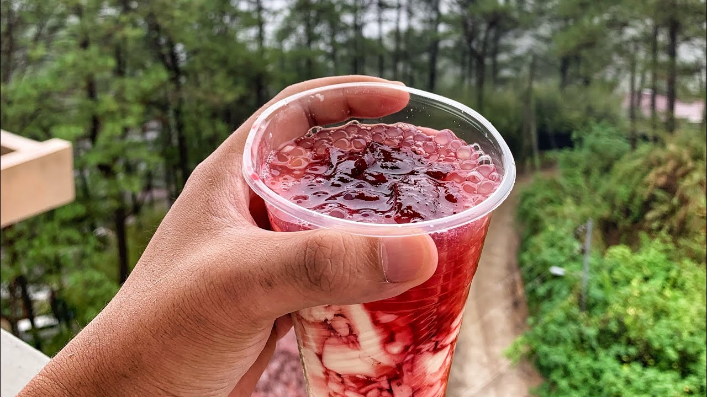
Strawberry taho is a refreshing warm snack made from silken tofu topped with arnibal (brown sugar syrup) and fresh strawberry puree. The combination of soft taho and sweet strawberry creates a delightful treat popular among locals and tourists.
Vendors serve this iconic Baguio snack hot, especially in the early morning and cool evenings. The strawberries come from local mountain farms, ensuring fresh and quality ingredients.
This affordable and beloved street food is a must-try when visiting Baguio City, offering a taste of local culinary tradition.
Ube jam is a sweet purple preserve made from purple yam, a popular ingredient in Filipino desserts. The rich, velvety texture and natural sweetness make it perfect for spreading on bread or used as a filling in pastries.
Baguio's cool mountain climate is ideal for cultivating quality ube, and local producers have perfected recipes passed down through generations. The jam captures the essence of traditional Filipino flavors.
Many visitors take ube jam home as a souvenir, making it one of Baguio's most sought-after food products.
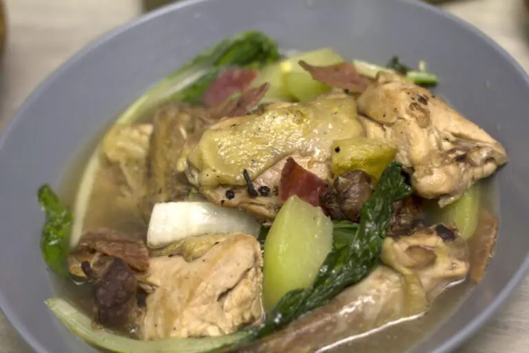
Pinikpikan is a traditional Cordillera dish where chicken is cooked in a broth made from chicken blood, vinegar, and spices. The unique preparation method and bold flavors reflect the indigenous heritage of the region.
This savory dish is typically served during special occasions and festivals, showcasing cultural pride and culinary authenticity. The slow-cooked chicken becomes tender, absorbing all the rich flavors.
For adventurous food lovers, pinikpikan offers a genuine taste of Cordillera culture and mountain traditions.
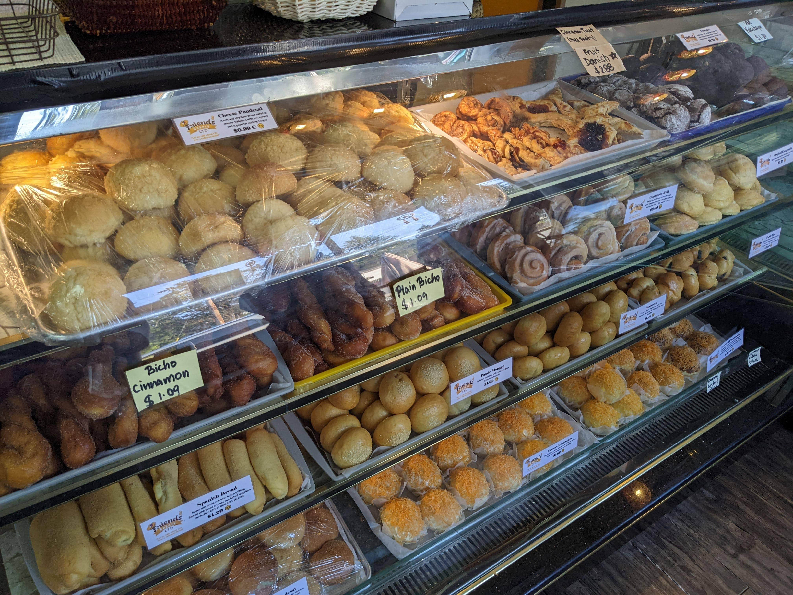
Baguio's local bakeries are famous for their fresh, artisanal breads made using time-honored recipes. From soft pan de sal to hearty loaves, each bakery offers unique flavors and textures.
The cooler mountain climate helps preserve freshness, and bakers take pride in using quality ingredients. Many bakeries have been operating for decades, building loyal customer bases.
Buying fresh bread from local bakeries is a authentic Baguio experience, perfect for breakfast or as gifts for family and friends.
Best activities
- Stroll at Burnham Park
- Shop in Session Road
- Visit the Botanical Garden
- View the city from Mines View

Burnham Park is one of Baguio's most iconic destinations, featuring beautiful gardens, a scenic lake, and walking trails perfect for a leisurely afternoon. The park is named after American urban planner Daniel Burnham and reflects city planning principles.
Visitors can enjoy paddle boats on the lake, feed ducks and fish, or simply relax on benches surrounded by lush greenery. The cool mountain air and peaceful atmosphere make it ideal for families and couples.
Burnham Park is accessible year-round and offers a perfect escape from the city's bustle, showcasing Baguio's commitment to green spaces and nature.

Session Road is Baguio's main commercial street, lined with shops, restaurants, and cafes. The bustling road is named after the Philippine Legislative Assembly's summer sessions held in the city.
Shoppers can find everything from local crafts and souvenirs to international brands and food items. The street has a vibrant energy with street performers and vendors adding to the lively atmosphere.
Whether you're looking for unique gifts or local products, Session Road offers diverse shopping experiences that reflect Baguio's dynamic culture.
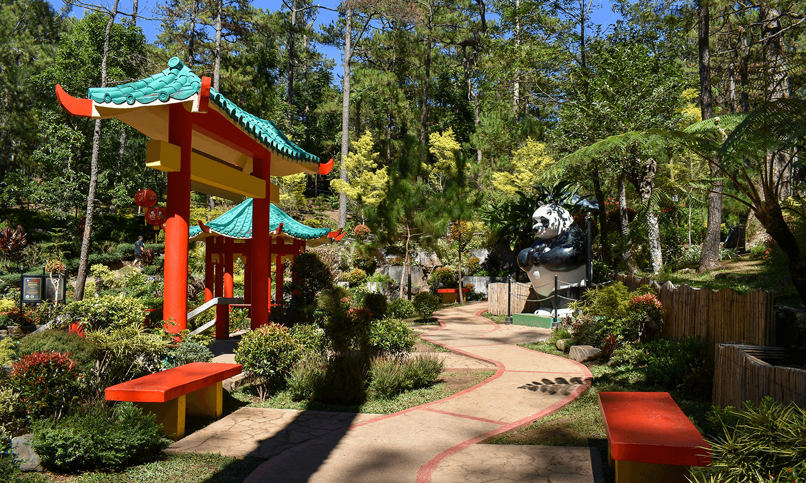
The Baguio Botanical Garden is a serene sanctuary featuring diverse plant collections, including orchids, flowers, and native plant species. The well-maintained gardens provide a peaceful retreat for nature lovers.
Visitors can explore various themed sections, take photographs among beautiful blooms, and learn about local and regional plant species. The garden offers guided tours that provide valuable insights into plant conservation.
This peaceful destination is perfect for quiet reflection and connecting with nature's beauty in the heart of the city.
Mines View offers one of the most spectacular panoramic views of Baguio City and the surrounding mountains. On clear days, visitors can see vast stretches of pine-covered slopes and the city sprawling below.
The viewpoint is named after the gold and copper mines that historically operated in the area. The cool mountain breeze and stunning vistas make it a favorite spot for photographers and nature enthusiasts.
Sunset viewing at Mines View creates unforgettable moments, as the sky transforms into brilliant colors above the mountain landscape.
5. Bohol
Bohol shows calm island life mixed with deep traditions and strong family ties. You will notice old churches, craft markets, and town fiestas across the province. Locals value community gatherings and fresh coastal meals. Cooking centers on seafood, peanuts, root crops, and native rice cakes. Food trips focus on peanut kisses, caluwa rice cake, grilled fish, and thick hot chocolate. Outdoor plans include seeing the Chocolate Hills, visiting tarsier sanctuaries, cruising the Loboc River, and snorkeling near Panglao.
Best foods
- Peanut kisses
- Caluwa rice cake
- Fresh grilled fish
- Sikwate hot chocolate

Peanut kisses are bite-sized sweets made from ground peanuts wrapped in colorful tissue paper, creating a charming and delicious treat. The sweet peanut flavor melts in your mouth, offering a simple yet satisfying snack.
These candies are widely sold in Bohol's markets and souvenir shops, becoming iconic takeaway gifts. Families have perfected recipes across generations, making each batch with care and quality ingredients.
Peanut kisses represent Bohol's sweet culinary heritage and are best enjoyed with coffee or tea, perfect for sharing with loved ones.
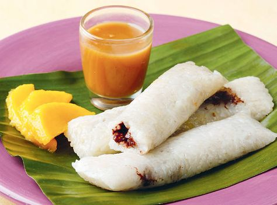
Caluwa is a traditional sticky rice cake made from glutinous rice, brown sugar, and coconut milk. The rich, chewy texture and natural sweetness make it a beloved dessert in Bohol celebrations and festivals.
Locals prepare caluwa using time-honored methods, layering rice and sugar mixtures with precision. The result is a golden-brown cake with a moist interior that stays fresh for several days.
This authentic regional delicacy offers a genuine taste of Bohol's culinary traditions and is often shared during important family occasions.

Bohol's coastal location provides access to the freshest catch daily, with local fishermen bringing in varieties of fish from nearby waters. Grilled fish is typically seasoned simply with salt and served with vinegar dipping sauce.
Beachside restaurants and local eateries prepare grilled fish over charcoal, enhancing its natural flavors and creating a smoky aroma. The preparation method honors the simplicity and quality of fresh seafood.
Enjoying freshly grilled fish by the sea is a quintessential Bohol dining experience that connects you to the island's maritime culture.
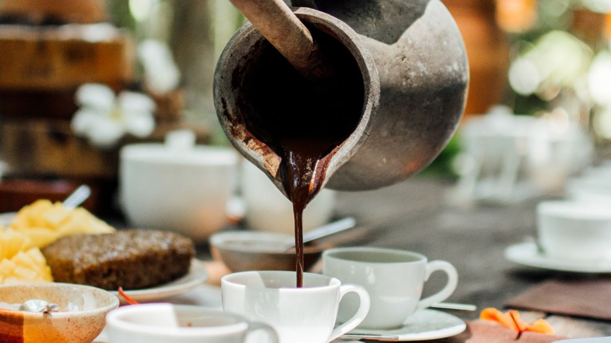
Sikwate is a traditional Filipino hot chocolate made from cacao tablets ground with spices and milk. Bohol's version is known for its rich, velvety texture and authentic preparation method passed down through families.
Served hot and often paired with local pastries or bread, sikwate provides warmth and comfort during cool mornings or rainy days. The drink represents a connection to Filipino colonial heritage and indigenous traditions.
Sipping sikwate in a local café or home setting offers a nostalgic and genuine taste of Bohol's cultural identity.
Best activities
- Visit the Chocolate Hills
- See tarsiers in conservation parks
- Cruise the Loboc River
- Snorkel near Panglao
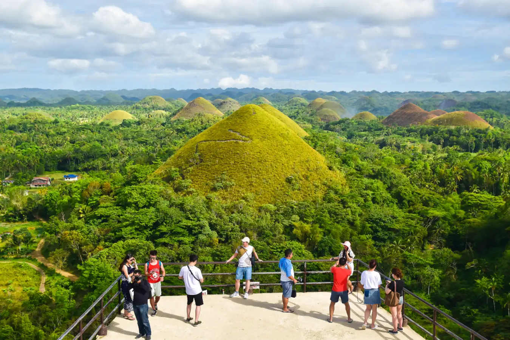
The Chocolate Hills are a geological wonder consisting of 1,268 unique conical hills spread across Bohol's interior. During the dry season, the hills turn brown, resembling chocolate candies from which they get their name.
Visitors can hike to viewpoints or ride ATV tours around the hills, experiencing breathtaking panoramic vistas. The landscape is unlike anything else, making it a photographer's paradise and a natural wonder of international significance.
The Chocolate Hills represent Bohol's unique geography and are one of the Philippines' most recognizable natural attractions.
Tarsiers are tiny, endangered primates unique to Bohol and a few other Philippine locations. Conservation parks have been established to protect these remarkable creatures and educate visitors about their importance to the ecosystem.
Guided tours allow visitors to observe tarsiers in protected environments while learning about their nocturnal habits, diet, and conservation status. The experience is educational and respectful of the animals' natural behavior.
Supporting tarsier conservation through park visits helps ensure these unique creatures survive for future generations.
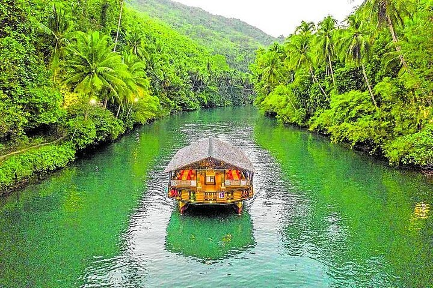
The Loboc River cruise offers a peaceful journey through Bohol's lush inland waterways, showcasing mangrove forests, small villages, and natural scenery. Traditional outrigger boats provide comfortable passage while local guides share stories about the region.
River cruises often include fresh seafood meals served onboard and stops at riverside attractions. The experience provides insight into how local communities live and interact with the river ecosystem.
This relaxing activity is perfect for nature lovers seeking a gentle way to explore Bohol's interior and connect with local culture.
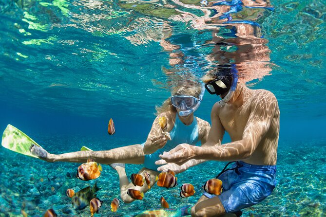
Panglao Island's surrounding waters are home to vibrant coral reefs and diverse marine life, making it an excellent snorkeling destination. Clear waters provide ideal visibility for observing colorful fish and coral formations.
Tour operators provide equipment, safety briefings, and guided snorkeling experiences suitable for all skill levels. Many tours visit multiple reef sites in one day, maximizing the chance to see different marine species.
Snorkeling near Panglao connects you with Bohol's rich marine biodiversity and promotes appreciation for ocean conservation.
6. Batanes
Batanes reflects quiet village life shaped by wind, sea, and stone homes. Ivatan culture values discipline, farming, and fishing. Houses use thick walls to resist storms, and landscapes stretch wide with rolling hills. Meals feature uvud balls, lunis pork, turmeric rice, and dried fish dishes. Activities include walking through Marlboro Hills, visiting Basco lighthouse, exploring stone villages, and biking along coastal roads.
Best foods
- Uvud balls
- Dibang bird soup
- Lunis pork
- Turmeric rice
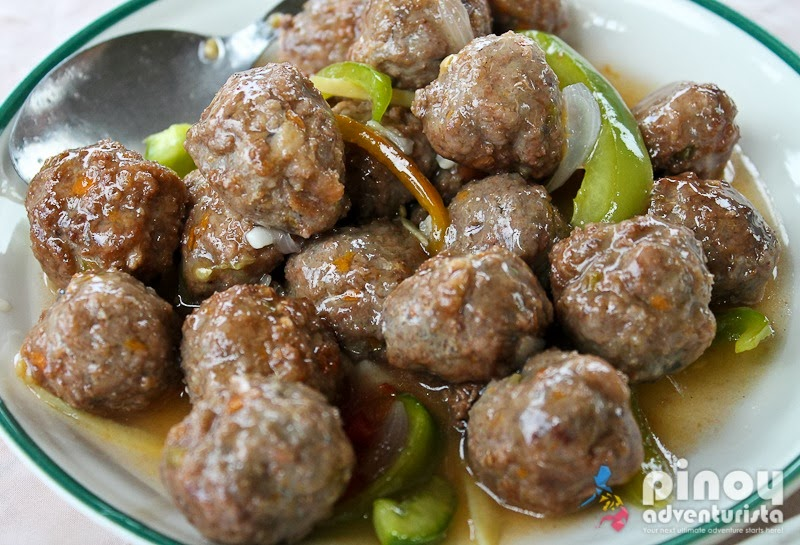
Uvud balls are a traditional Ivatan delicacy made from ground taro or banana wrapped with ground meat, typically pork. These stuffed balls are boiled and served as a savory main dish reflecting Batanes' indigenous culinary heritage.
The preparation requires skill and time, with families maintaining secret recipes passed through generations. The combination of starchy filling and savory meat creates a hearty, satisfying meal.
Eating uvud balls connects you to Batanes' unique Ivatan culture and traditional food preparation methods.
.jpg)
Dibang bird soup is a traditional Ivatan dish made from small seabirds found in Batanes. The soup is prepared with vegetables and local herbs, creating a rich and flavorful broth.
This dish reflects the islanders' resourcefulness and deep connection to the sea and local environment. The birds are sustainably sourced and the preparation honors traditional hunting practices.
For adventurous travelers seeking authentic local flavors, dibang bird soup offers a unique culinary experience rooted in Batanes' maritime heritage.
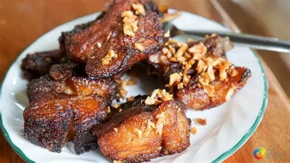
Lunis is a traditional Ivatan dish featuring pork preserved using salt and unique seasoning methods developed to withstand Batanes' harsh weather. The pork develops distinctive flavors through the curing process.
Local farmers raise pigs traditionally, and the meat is prepared with spices and techniques that create a distinctive taste different from mainland Filipino cured meats. The result is tender and flavorful.
Lunis pork represents Batanes' self-sufficient island lifestyle and preservation techniques necessary for survival in the isolated islands.
Turmeric rice is a simple yet flavorful dish made by cooking rice with turmeric powder, creating a golden color and earthy taste. The spice provides both flavor and traditional health benefits.
This dish is commonly served with local vegetables and proteins, reflecting Batanes' agricultural traditions. The turmeric grown or imported to the island is carefully selected for quality.
Turmeric rice is a staple accompaniment to most Ivatan meals, representing the foundation of local cuisine and cultural dining practices.
Best activities
- Walk in Marlboro Hills
- Visit Basco lighthouse
- Explore stone villages
- Ride bikes along coastal roads
.webp)
Marlboro Hills feature rolling green hills and wide-open landscapes named after the famous cigarette brand due to their resemblance to Marlboro advertisements. The scenic vistas are spectacular, especially during sunrise and sunset.
Walking through the hills offers opportunities for photography and connecting with Batanes' untamed natural beauty. The cool mountain air and vast horizons create a sense of peace and freedom.
Marlboro Hills represent Batanes' wind-swept landscapes and are perfect for experiencing the island's dramatic natural scenery.
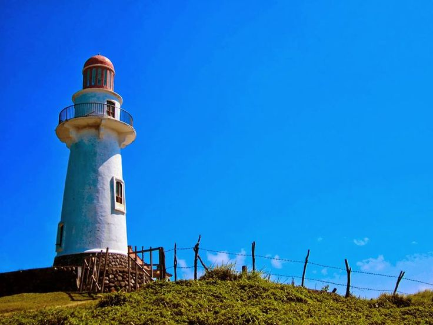
Basco lighthouse stands on a cliff overlooking the Bashi Channel and serves as an important navigation aid for maritime traffic. The historic structure offers panoramic views of the coastline and surrounding waters.
Visitors can climb to the top of the lighthouse for breathtaking vistas and photograph the dramatic seascape. The lighthouse represents Batanes' maritime heritage and strategic location.
The site is historically significant and provides insight into the island's role in regional navigation and maritime safety.
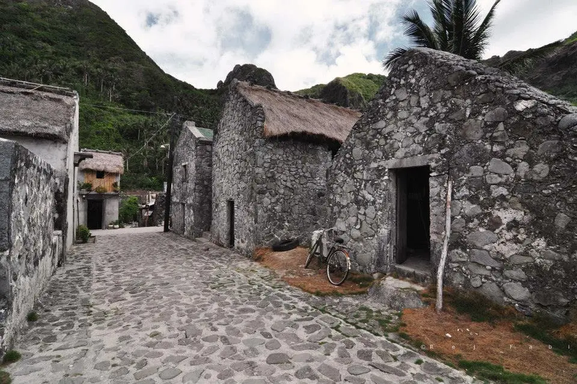
Batanes' stone villages feature traditional Ivatan architecture with houses built from stone walls to withstand typhoons. The distinctive building style reflects centuries of adaptation to the island's harsh weather conditions.
Walking through these villages allows visitors to observe authentic Ivatan lifestyle and architectural heritage. Many homes feature thick walls, small windows, and sturdy construction methods unique to the islands.
Exploring stone villages provides insight into how Ivatans have maintained their culture and way of life for generations despite geographic isolation.
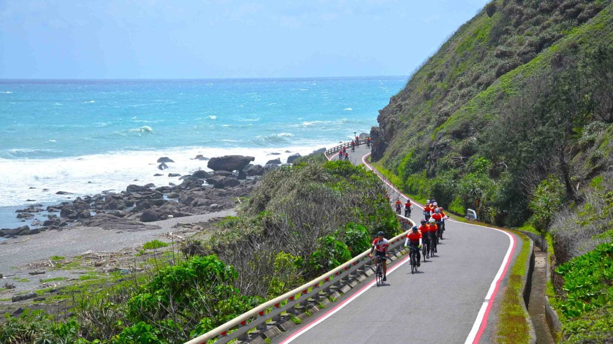
Biking along Batanes' coastal roads offers an active way to explore the islands while experiencing stunning ocean views. The roads wind through rural areas, coastal cliffs, and small villages.
Cyclists encounter few vehicles, making the roads safe and peaceful. The activity combines exercise with cultural immersion and nature appreciation.
Coastal biking in Batanes is an environmentally friendly way to discover hidden gems and experience the islands' natural beauty at a slower pace.
7. Vigan
Vigan preserves colonial streets, brick houses, and horse drawn rides. Ilocano culture values thrift, history, and home cooking passed down through families. The city keeps strong pride in its heritage. Local tables serve Vigan longganisa, bagnet, empanada, and beef soup. Visitors walk Calle Crisologo, ride a kalesa, tour museums, and explore restored homes.
Best foods
- Vigan longganisa
- Bagnet
- Empanada
- Sinanglaw soup
Vigan longganisa is a traditional Filipino sausage famous for its distinctive sweet and savory flavor profile. The meat is seasoned with annato, vinegar, and spices, then stuffed in casings and cured.
This beloved breakfast staple has been produced in Vigan for centuries using family recipes and traditional methods. The sausage pairs perfectly with rice and is often grilled or fried for serving.
Vigan longganisa represents the city's culinary heritage and is a must-try authentic product that visitors often bring home as souvenirs.
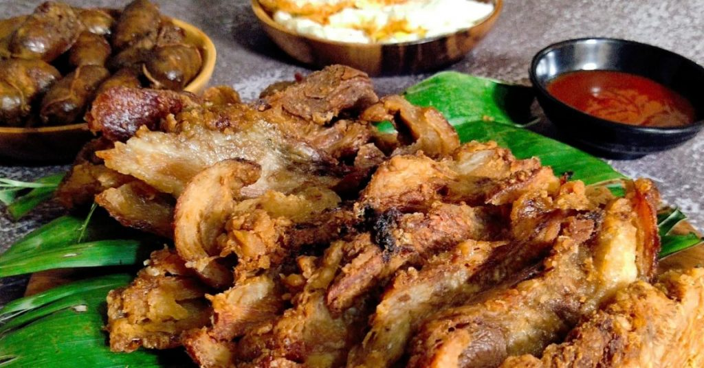
Bagnet is a crispy Ilocano dish made from deep-fried pork belly, typically served with vinegar-based dipping sauce. The skin becomes crunchy while the meat remains tender, creating a textural delight.
This hearty meat dish reflects Ilocano culinary traditions and is often served during family gatherings and celebrations. The preparation technique ensures maximum crispiness and flavor absorption.
Eating bagnet in Vigan connects you to authentic Ilocano flavors and the region's rich meat-preparation heritage.
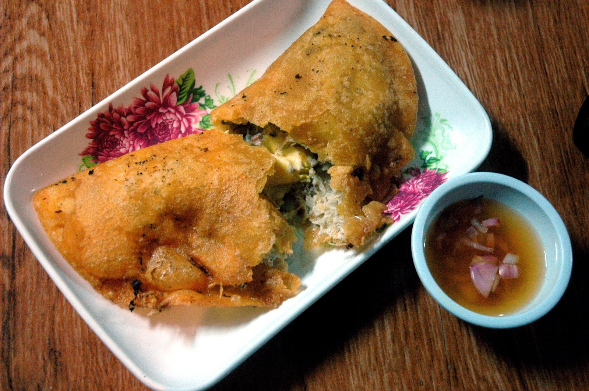
Vigan empanada is a fried pastry filled with ground meat, vegetables, and spices, representing a fusion of Spanish and Filipino culinary traditions. The filling combines beef, potato, and unique seasonings creating distinctive flavor.
Street vendors and shops throughout Vigan sell freshly made empanadas with crispy golden exteriors and savory fillings. The pasty is best eaten hot, often with vinegar on the side.
Empanada is an iconic Vigan street food and perfect accompaniment to exploring the historic city's colonial streets.
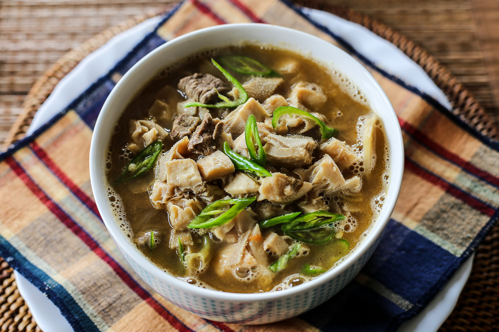
Sinanglaw is a traditional Ilocano soup made with fish or shrimp wrapped in mustard leaves and cooked in a ginger-based broth. The wrapped parcels slowly release flavors into the flavorful broth.
This comfort soup is often served during cool days and represents home cooking passed down through Ilocano families. The combination of fresh herbs, ginger, and seafood creates a warming and nourishing dish.
Sinanglaw soup offers a genuine taste of Ilocano home cooking and regional culinary traditions.
Best activities
- Walk on Calle Crisologo
- Ride a kalesa
- Visit museums
- Explore heritage homes
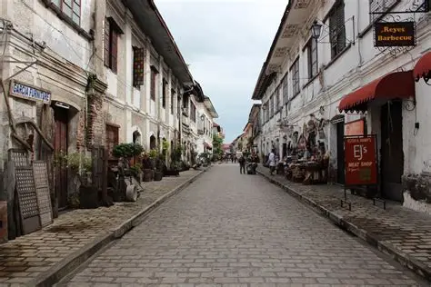
Calle Crisologo is Vigan's most famous street, featuring preserved Spanish colonial architecture and cobblestone paths. The street is lined with ancestral houses, shops, cafes, and galleries reflecting centuries of history.
Walking the street provides an immersive experience into Vigan's colonial past. The architecture represents a well-preserved example of colonial Philippine design and craftsmanship.
Calle Crisologo is a UNESCO World Heritage Site and represents the Philippines' architectural heritage and cultural preservation efforts.
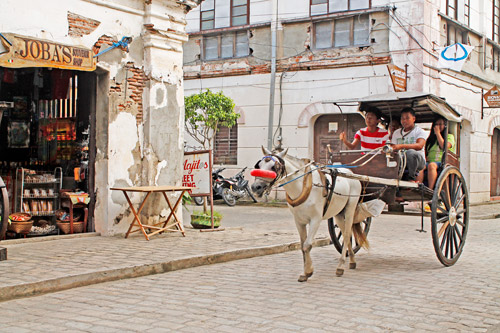
Kalesa is a traditional wooden horse-drawn carriage that has been used in Vigan for centuries. Riding a kalesa through colonial streets offers a unique and romantic way to explore the city.
Local drivers provide knowledgeable commentary about historical sites and architectural details along the routes. The slow pace allows for observation and photography opportunities.
The kalesa experience connects travelers to Vigan's colonial past and is one of the most iconic activities in the city.
Vigan's museums showcase the city's rich history, art, and cultural heritage. Exhibits include colonial artifacts, indigenous crafts, religious items, and historical documents.
Museums like the Crisologo Museum and Vigan Heritage Museum provide deep insights into the city's development and significance in Philippine history. Knowledgeable curators share stories that bring history to life.
Museum visits offer educational opportunities for understanding Vigan's complex history and cultural significance.

Vigan's heritage homes are examples of colonial Filipino architecture, many dating back several centuries. These ancestral houses feature thick wooden walls, large windows, and distinctive design elements.
Some heritage homes have been converted into museums, restaurants, or guesthouses, allowing visitors to experience colonial living. Tours reveal construction methods, decoration styles, and family histories.
Exploring heritage homes provides appreciation for craftsmanship, architectural design, and the lives of prominent families that shaped Vigan's history.
8. Cebu
Cebu mixes city pace with island roots and religious festivals. Music, street parades, and coastal trade shape daily life. Locals celebrate history and food gatherings across neighborhoods. Dishes include lechon, puso rice, ngohiong rolls, and noodle plates. Activities feature Magellan’s Cross visits, Kawasan Falls swims, Sinulog watching, and beach trips.
Best foods
- Lechon
- Puso hanging rice
- Ngohiong rolls
- Bami noodles
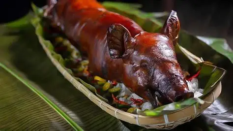
Lechon is a whole roasted pig that is a centerpiece of Cebuano celebrations and family gatherings. The pig is slowly roasted over charcoal until the skin becomes golden and crispy while meat inside remains juicy and tender.
Cebuano lechon is famous throughout the Philippines for its exceptional flavor and quality. The traditional preparation method and careful seasoning create an unmatched taste that locals and tourists consider the best.
Eating lechon in Cebu represents participation in one of the Philippines' most iconic culinary traditions and celebrations.
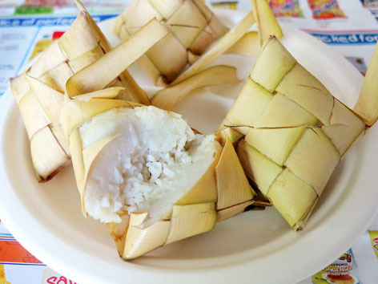
Puso is cooked rice wrapped in coconut leaves in a heart shape, creating an attractive and practical serving. The leaves impart subtle flavor to the rice and keep it warm and moist.
This traditional Cebuano dish is commonly served as an accompaniment to grilled meats and seafood. Street vendors and restaurants throughout Cebu prepare fresh puso daily for local consumption.
Puso represents Cebuano ingenuity in food preparation and is a symbol of local culinary identity and tradition.
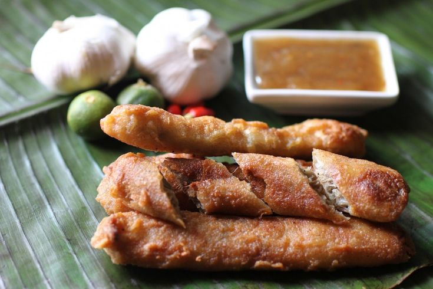
Ngohiong is a spring roll filled with vegetables and meat, lightly fried until golden. The crispy exterior contrasts with the flavorful filling, creating a perfect appetizer or snack.
This Cebuano favorite is influenced by Chinese cooking techniques and reflects the region's multicultural heritage. Vendors sell fresh ngohiong throughout markets and festivals.
Eating ngohiong offers a taste of Cebuano cultural fusion and creative culinary adaptation.
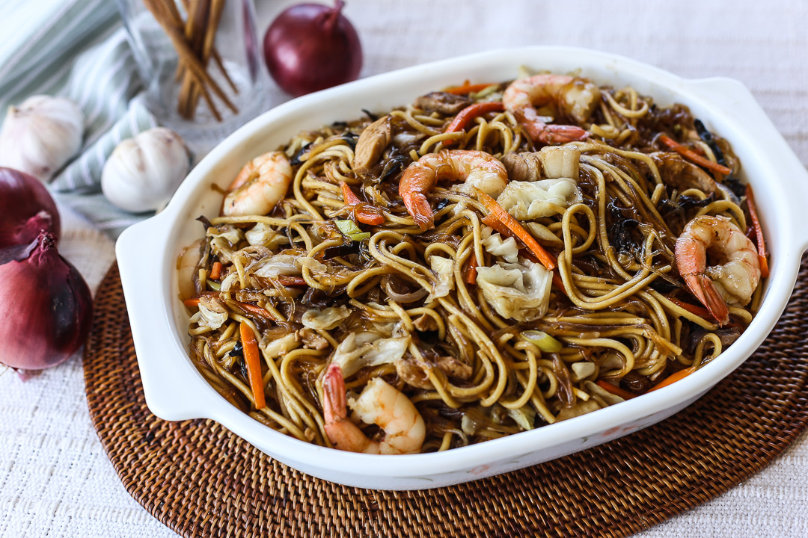
Bami is a savory noodle dish made with wheat noodles, meat, vegetables, and sauce. The dish is quick to prepare and provides a hearty, satisfying meal.
This popular street food is eaten for breakfast, lunch, or as a quick dinner by Cebuanos. The flavors are bold and comforting, reflecting Chinese influence in Philippine cuisine.
Bami noodles represent everyday Cebuano comfort food and cultural fusion in local cuisine.
Best activities
- Visit Magellan’s Cross
- Swim at Kawasan Falls
- Watch the Sinulog Festival
- Explore island beaches
.webp)
Magellan's Cross is a historic wooden cross planted by Ferdinand Magellan upon his arrival in Cebu in 1521, marking the beginning of Christianity in the Philippines. The cross is now housed in a church chapel for protection.
The site is of tremendous historical and religious significance, attracting pilgrims and history enthusiasts. Visitors can view the cross and learn about its role in Philippine history and Christianization.
Visiting Magellan's Cross connects you to pivotal moments in Philippine history and cultural transformation.
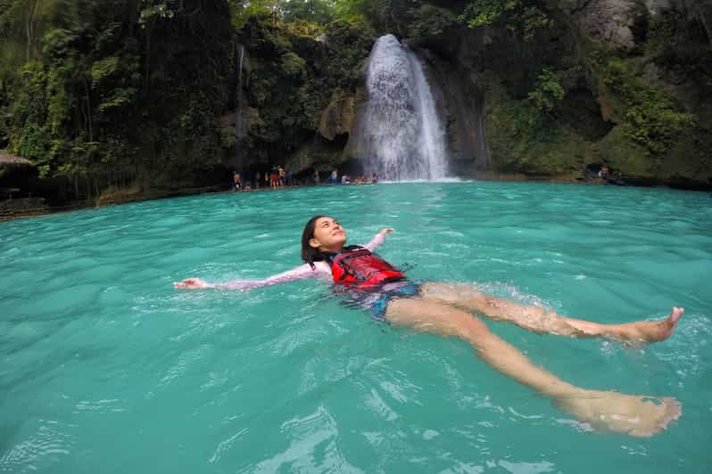
Kawasan Falls is a beautiful three-tiered waterfall surrounded by lush green vegetation and offering clear emerald pools perfect for swimming. The site is a natural oasis located outside Cebu City.
Visitors can swim, slide down natural rock formations, and explore the cave behind the waterfall. The refreshing waters and scenic beauty make it a popular destination for cooling off and connecting with nature.
Kawasan Falls offers an escape from the city and opportunity to experience Cebu's natural beauty and outdoor recreation.
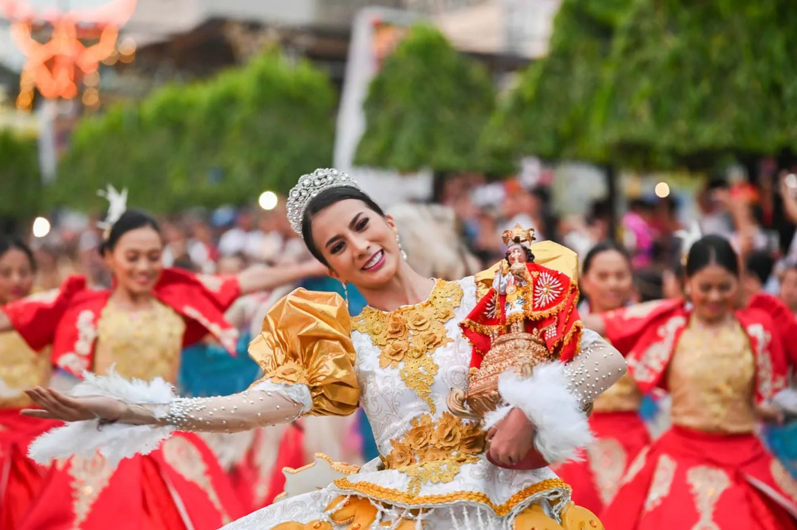
Sinulog Festival is Cebu's most celebrated event, held annually in January to honor Cebu's patron saint, Sto. Niño. The festival features colorful street parades, cultural performances, music, and dancing throughout the city.
Thousands of participants and visitors wear vibrant costumes and dance to the rhythmic Sinulog chant. The festival represents Cebuano pride, cultural identity, and religious devotion.
Experiencing Sinulog Festival provides immersion in authentic Cebuano culture, celebration, and community spirit.
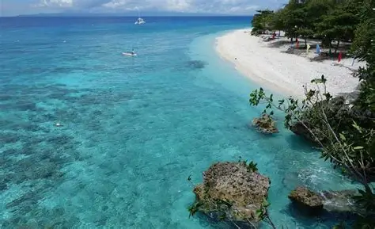
Cebu is surrounded by numerous islands and beaches offering white sand, clear waters, and marine biodiversity. Each island has unique characteristics, from developed resort islands to pristine remote beaches.
Island tours include snorkeling, diving, and beach relaxation opportunities. The marine life and coral reefs provide spectacular underwater experiences.
Exploring Cebu's island beaches connects you to the region's natural beauty and marine heritage.
9. Mindoro
Mindoro supports farming communities and indigenous groups with deep forest and coastal links. Mangyan culture values weaving, farming cycles, and forest respect. Rivers and mountains shape daily routines. Food includes fish stews, grilled chicken, root crop snacks, and native rice meals. Trips involve diving in Puerto Galera, hiking trails, visiting villages, and swimming in waterfalls.
Best foods
- Sinigang na isda
- Inasal style chicken
- Root crop snacks
- Native rice meals

Sinigang na isda is a sour tamarind-based fish soup made with fresh local fish from Mindoro's waters. The broth combines vegetables like radish, kangkong, and ginger, creating a complex and nourishing flavor profile.
This traditional dish reflects Mindoro's coastal heritage and indigenous food preparation methods. The fish is tender and flakes easily, absorbing the tangy and savory broth.
Sinigang na isda represents authentic provincial Filipino cooking and connection to local fishing traditions.

Inasal is grilled chicken marinated and cooked over charcoal, seasoned with lemongrass, garlic, ginger, and local spices. The meat becomes tender and smoky while the skin crisps beautifully.
This popular grilled chicken preparation is served throughout Mindoro with rice and vinegar dipping sauce. The cooking method honors indigenous grilling traditions and simple flavor enhancement.
Eating inasal chicken connects you to traditional outdoor cooking methods and regional culinary preferences.
Mindoro's fertile land produces various root crops like taro, ube, and cassava, which are prepared as snacks. These are boiled, roasted, or fried and sold as affordable and nutritious treats.
Root crops are staples in Mindoro's indigenous Mangyan diet and have been cultivated for centuries. The snacks provide essential nutrients and represent agricultural heritage.
Enjoying root crop snacks offers insight into Mindoro's food security, agricultural traditions, and indigenous dietary practices.
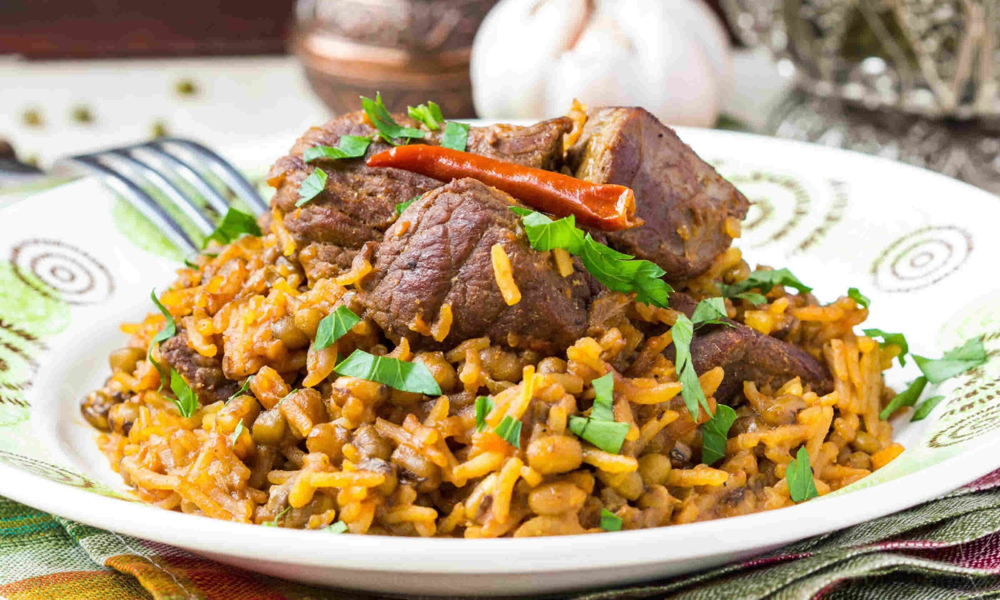
Native rice varieties grown in Mindoro's upland areas are prepared in traditional ways. These heirloom rice varieties have distinct flavors and nutritional profiles different from commercial white rice.
Meals featuring native rice are served with local vegetables and protein, showcasing agricultural biodiversity. The preparation methods honor sustainable farming practices.
Native rice meals represent Mindoro's commitment to agricultural preservation and indigenous food systems.
Best activities
- Dive in Puerto Galera
- Trek mountain trails
- Visit Mangyan villages
- Swim in waterfalls
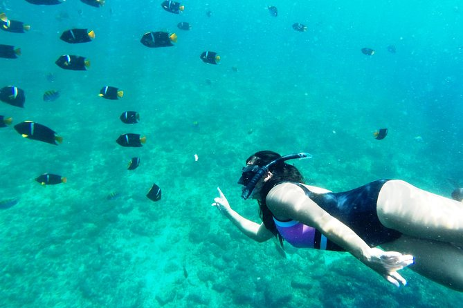
Puerto Galera is one of the Philippines' premier diving destinations with vibrant coral reefs, diverse marine life, and excellent visibility. Multiple dive sites cater to beginners through advanced divers.
Diving instructors and operators provide professional guidance and equipment. The underwater landscape features coral gardens, shipwrecks, and encounter with tropical fish and rays.
Diving in Puerto Galera connects you to Mindoro's rich marine biodiversity and provides unforgettable underwater experiences.
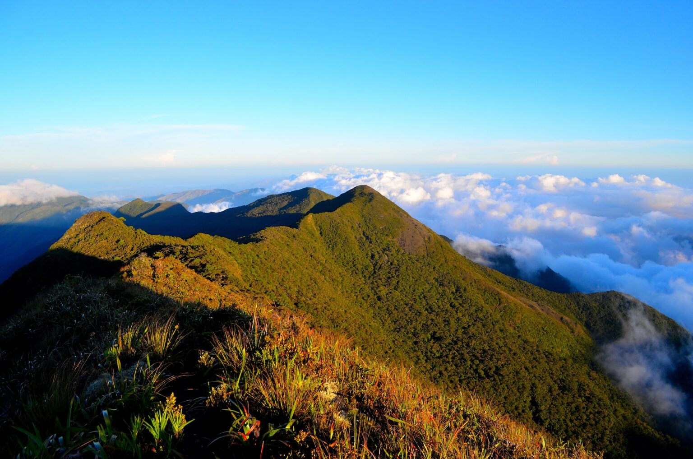
Mindoro's mountainous interior features diverse ecosystems and scenic trekking trails through forests and upland areas. Trails vary in difficulty and length, suitable for various fitness levels.
Trekking reveals native plant and animal species, indigenous communities, and breathtaking mountain vistas. Guides provide knowledge about ecology and local culture.
Mountain trekking in Mindoro offers adventure, nature connection, and cultural immersion in one experience.
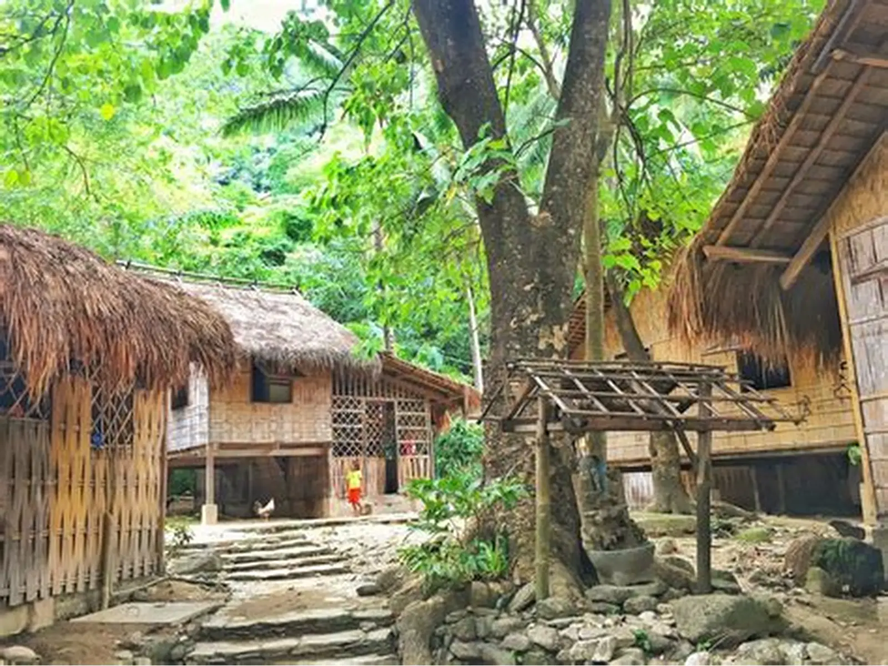
Mindoro is home to various Mangyan indigenous groups with unique cultures, traditions, and crafts. Visiting villages allows respectful cultural exchange and appreciation for indigenous lifestyles.
Community-based tourism in Mangyan villages benefits local people while providing visitors authentic cultural experiences. Guides share histories and traditional practices.
Village visits support indigenous communities and promote cultural preservation and respect for indigenous peoples.
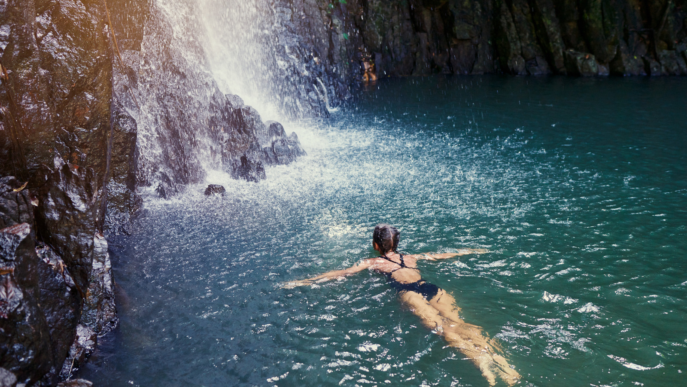
Mindoro has numerous waterfalls surrounded by lush vegetation and crystal-clear pools perfect for swimming. Each waterfall offers unique scenery and swimming experiences.
Waterfall swimming provides refreshment and connection to nature. The pristine waters and natural beauty make these destinations popular for relaxation and photography.
Exploring Mindoro's waterfalls showcases the island's natural wealth and outdoor recreation opportunities.
10. Mactan
Mactan centers on fishing life and historic pride tied to Lapu Lapu. Resorts share space with coastal villages and seafood grills. The island keeps strong links to sea travel and trade. Meals focus on grilled tuna, scallops, coconut desserts, and seafood soups. Visitors snorkel reefs, visit monuments, relax at resorts, and join island hopping tours.
Best foods
- Grilled tuna belly
- Scallops
- Seafood soups
- Coconut desserts
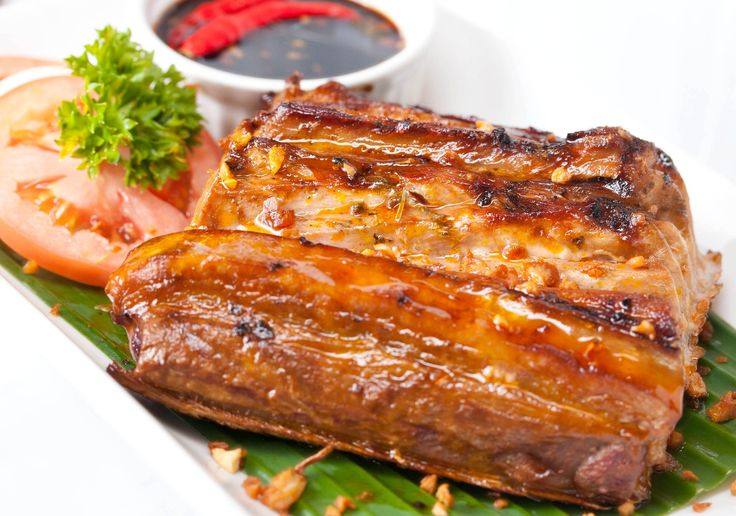
Grilled tuna belly is a premium seafood dish featuring the buttery, tender meat from the tuna's belly. Grilled over charcoal with minimal seasoning, it showcases the fish's natural rich flavor and quality.
Mactan's fishing tradition ensures access to the freshest catches daily. The meat becomes slightly crispy outside while remaining moist and tender inside.
This dish represents Mactan's fishing heritage and the island's reputation for high-quality fresh seafood.
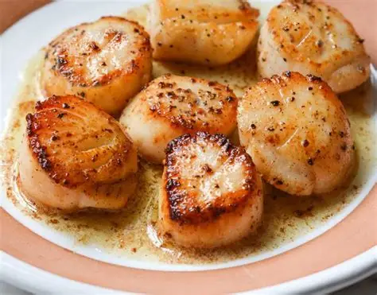
Fresh scallops from Mactan's waters are prepared grilled, pan-seared, or served raw depending on preference. The sweet, delicate meat is best enjoyed simply prepared to highlight natural flavor.
Scallops represent Mactan's bounty from the sea and skilled preparation by local chefs. The tender meat requires careful handling and quick cooking.
Eating fresh scallops in Mactan connects you to the island's maritime wealth and fishing traditions.
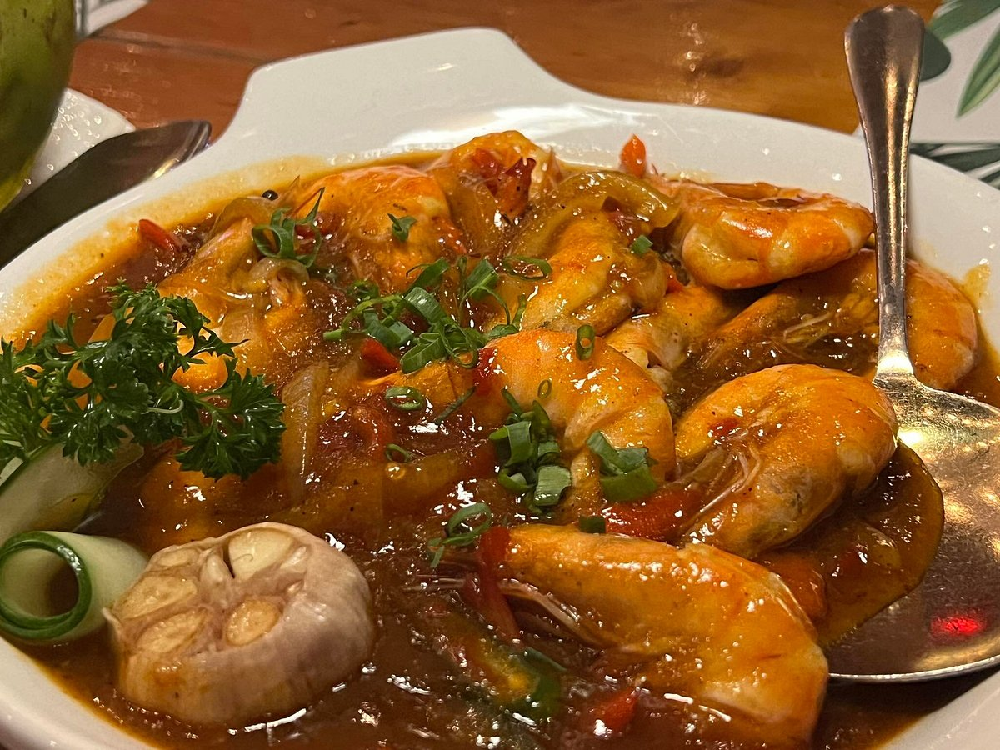
Mactan's seafood soups combine various fresh catches with broth, vegetables, and local spices. The soups are hearty, flavorful, and showcase the day's best catch.
Local eateries prepare soups daily, varying based on available fresh seafood. The preparation honors traditional cooking methods and ingredient quality.
Seafood soups offer warming meals that connect you to Mactan's fishing culture and coastal cuisine.
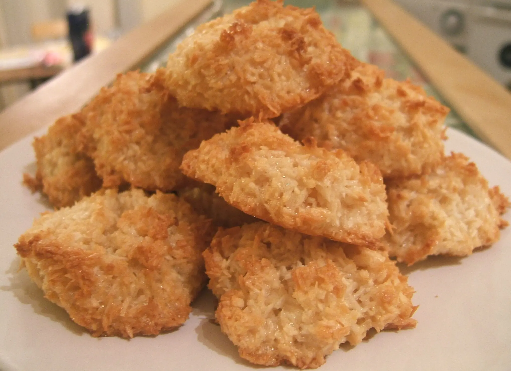
Mactan's abundant coconuts inspire various traditional desserts like coconut cakes, taro with coconut, and coconut candies. These sweets showcase the island's agricultural bounty.
Coconut desserts are served fresh and represent generations of family recipes. The natural sweetness and creamy texture create satisfying treats.
Enjoying coconut desserts in Mactan connects you to the island's coconut heritage and culinary traditions.
Best activities
- Snorkel near reefs
- Visit Lapu Lapu Shrine
- Relax on beach resorts
- Join island hopping tours
.webp)
Mactan's surrounding coral reefs offer excellent snorkeling with vibrant marine life and healthy coral formations. The clear shallow waters are perfect for observing tropical fish and other sea creatures.
Snorkeling tours are easily accessible from Mactan's resorts and beaches. Equipment rental and guided tours cater to snorkelers of all experience levels.
Snorkeling near Mactan connects you to the island's marine biodiversity and underwater beauty.
The Lapu Lapu Shrine honors the Filipino warrior who defeated Spanish explorer Ferdinand Magellan in the Battle of Mactan in 1521. The monument represents Filipino resistance and independence.
The shrine is a historic and patriotic landmark attracting locals and tourists alike. The site includes statues, information plaques, and sometimes ceremonial activities.
Visiting the Lapu Lapu Shrine connects you to pivotal Philippine history and national pride.
Mactan hosts numerous beach resorts ranging from budget-friendly to luxury accommodations. Most resorts offer beachfront access, water sports, and amenities for relaxation.
Resort beaches provide comfortable settings for swimming, sunbathing, and enjoying ocean views. Many resorts offer dining and water activities.
Beach resort experiences in Mactan combine comfort with natural beauty and recreation opportunities.
.webp)
Island hopping tours from Mactan visit nearby islands and attractions, including snorkeling sites, marine reserves, and smaller islands with beaches. Tours typically include meals and stop at multiple destinations.
Guides provide information about marine life, island history, and local culture. The tours maximize experiences in one day.
Island hopping offers comprehensive exploration of Mactan's surrounding waters and marine attractions.